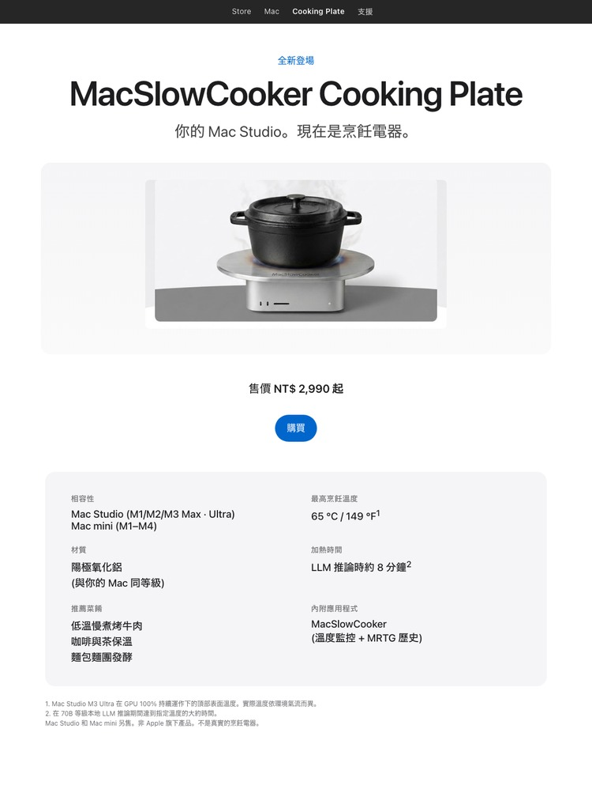
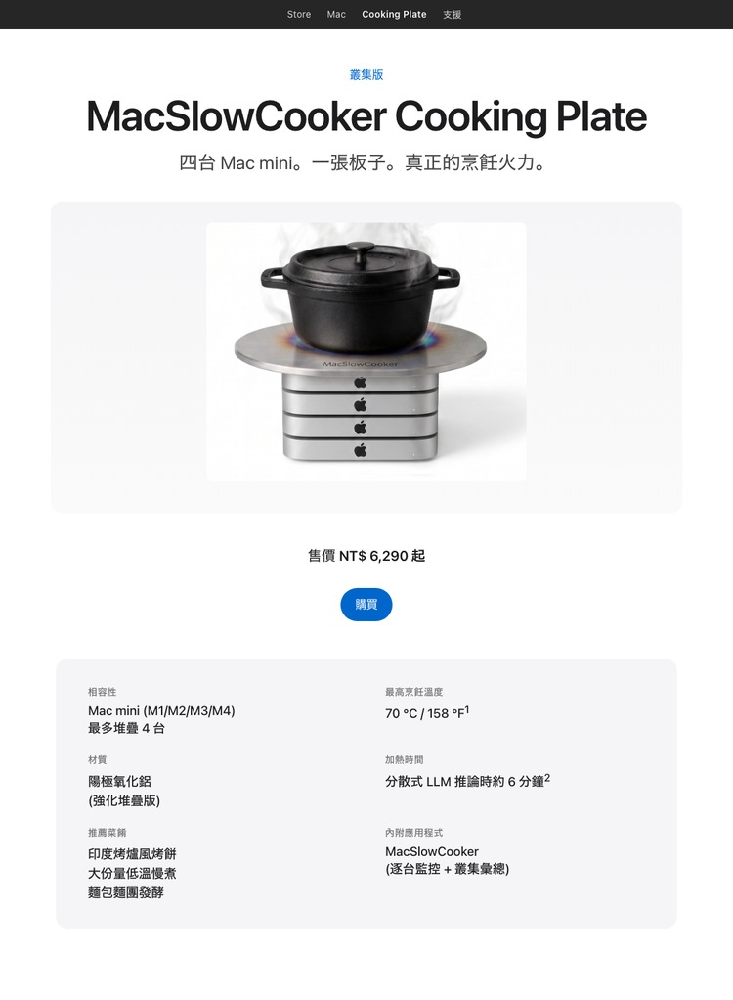
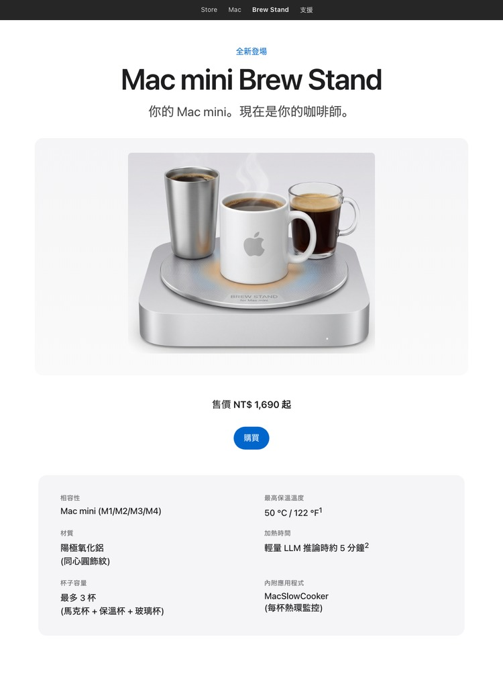

你的 Mac Studio。現在是烹飪電器。


叢集版 — 給 LLM 訓練機架用。四台 Mac mini，一張板子。一樣的仿諷，四倍的 BTU。

Brew Stand — 你的 Mac mini，現在是你的咖啡師。Cooking Plate 的杯子保溫版。同心圓飾紋，可放三杯。一樣的仿諷，熱飲版本。
開發實際存在的 macOS 應用程式 MacSlowCooker 期間 — 它在 Dock 上把 GPU 使用率視覺化成一個鍋子 — 在 Mac Studio M3 Ultra 上跑本地 LLM 推論時機殼變得相當燙，「這上面真的可以煮東西吧？」這個玩笑反覆出現。
於是有了這個概念頁面。它把一台拚命運轉的 Mac 的散熱當成烹飪功能來呈現。**數字是真的，產品是假的**。
把熱的烹飪器具、液體或任何怕熱的東西放在運轉中的電腦上是壞主意。Mac Studio 的頂蓋是鋁製，但空氣流動是把 SoC 維持在熱限制以下的關鍵。擋住會縮短機器壽命，也可能讓保固失效。